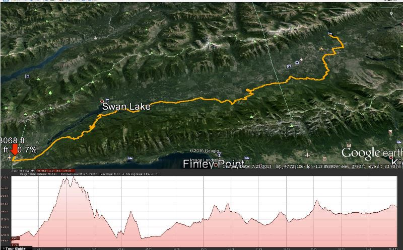
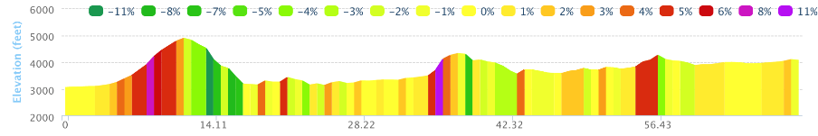
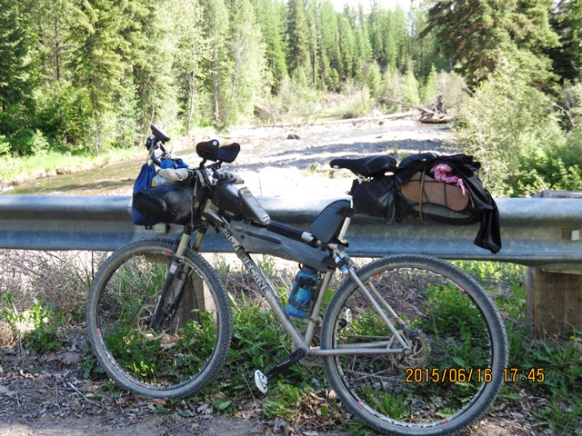
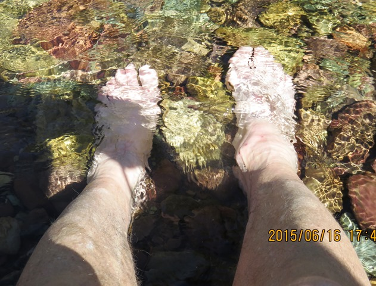
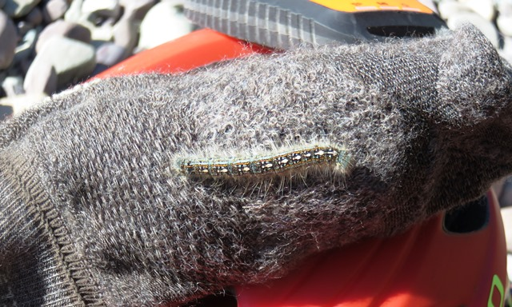
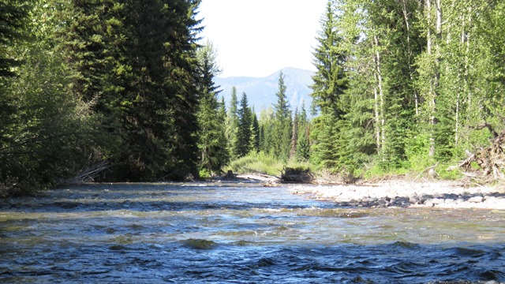
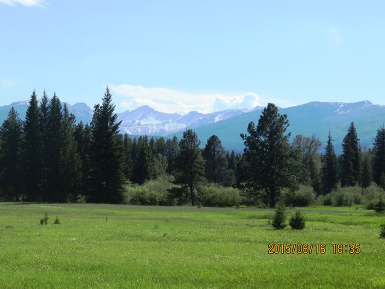
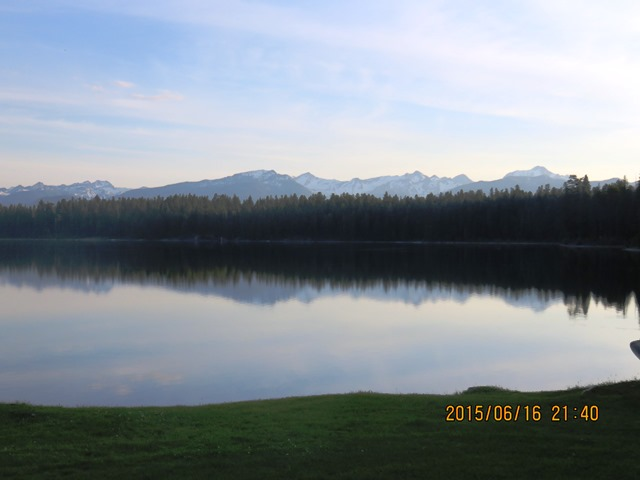
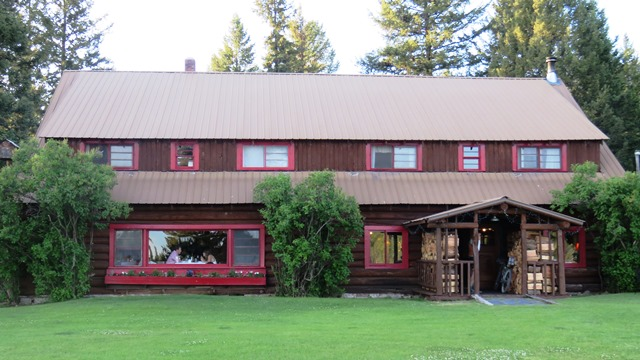

Leaving Ferndale

Mornings are for going up

After my previous night at the Downtowner in Whitefish the
The Candlewycke Inn
was a great stop. The food was good and service was
excellent. I was also able to replace ACA US1 map lost to the wind during the previous day. Megan, the
owner, allowed
me to use her computer and copy the cue sheets from Travis' map.
These and my Garmin should get me to
Polaris
which is the end of Map01.

I had anticiated a relatively easy day riding in the valley between two rows of mountains. About three miles Fermdale the trail went almost straight up. We went into the mountains to the west and climbed 1,800 feet over 7+ miles. It took over two hours to get up this hill with no name. Lesson learned "Never anticipate - just ride and see what the TD serves up.
Bird attack
Somewhere along the way this bird came jumping out of the brush and startled me. By the time I was past her I realized she must have a bunch of babies right along the trail

 Puffing her neck at everyone who came by
Puffing her neck at everyone who came by
Grizzly country
The second climb was a more modest 900 feet and then we just had some 300 to 500 footers to do throughout the afternoon.

This is the section with the highest Grizzly population in the country. It is just west of Glacier National Park. A woman who got into Holland LAke a few hours ahead of me was charged by a bear and sprayed him (and some on herself). She was a very strong rider but road the next few days in a group.
Some of the sections of double and single track I road through were really tight to the woods so if there was a bear in there he wouldn't have far to go to get you.

Lots of "Hey Bear" calls. I even had to walk thru some of those sections and it definitely felt kind of spooky.
A break by Glacier Creek

I was running low on water and decided to stop at this river, Glacier Creek.

I went down by the water and there was a nice area to sit so I took my shoes off and cooled my heels in the water.

The catapillers were all around but the other bugs weren't bad. Water was nice and cold.

I had a nice view both up the river and down from under the bridge.

The pictures don't really show the way the mountains in the background really look.

Toward the end of the day but still some hard stretchs from here.

Holland Lake
I thought when we turned into Holland Lake I was getting close. Unfortunately the road was one of the worst I had with washboard throughout. It was hard to get any momentum when you can't find a groove. I didn't know what to expect for my room that night. The Holland Lake Lodge was 1.5 miles off the trail. What I found when I finally arrived was wonderful!!

I had called ahead and the owner had told me they would definitely have space. It was either there or the campground next door! Christian, the owner, was wonderful. The food was great and I had about three deserts. I met many TD riders who would pop up again and again during the next week. The temps were still in the 80s late in the day but definitely cooler along the lake. My room was hot but I also had a fan! Some great photos of Holland Lake on the web site.

June 17 - Holland Lake to Ovando
See full screen map To go places and do things that I've never done before – that’s what living is all about.Text by Jim O'Brien . Photographs by Jim O'BrienTD on Flickr.